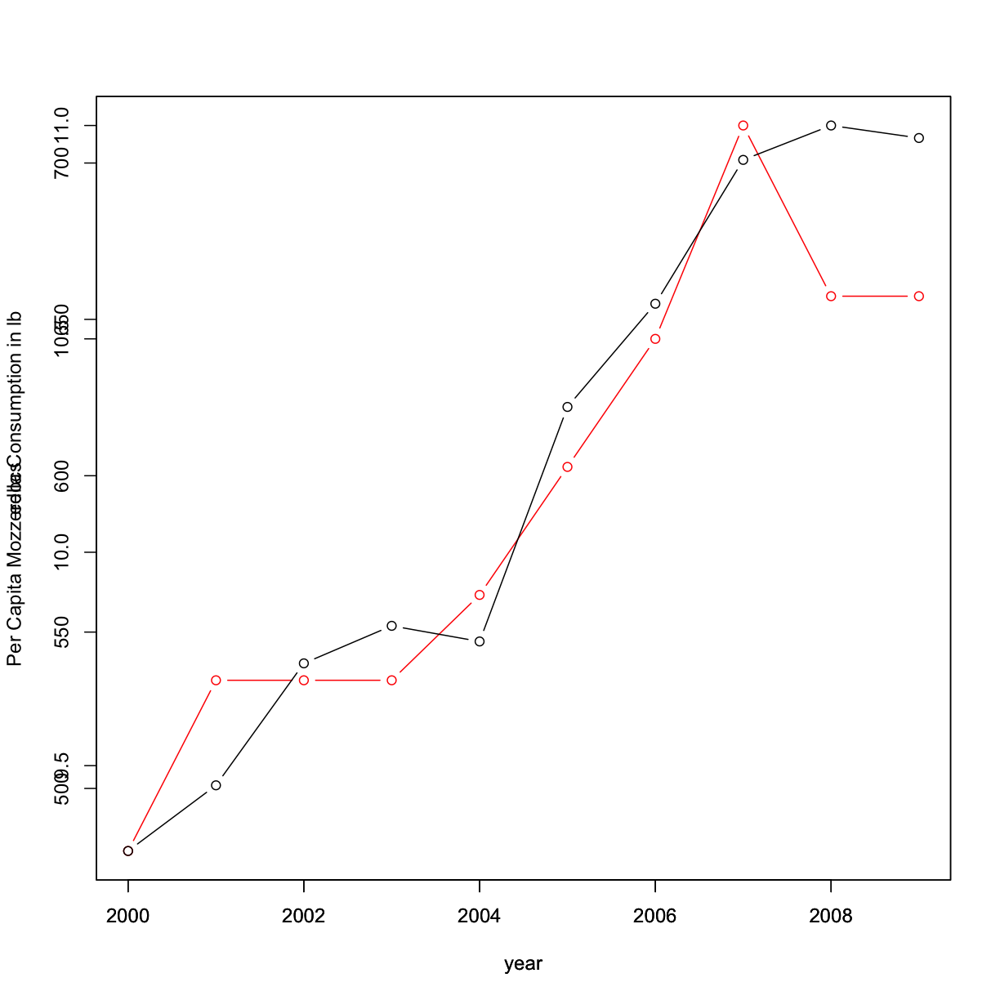

Course Intro & Motivation, Intro to R
Overview
Week: 1Reading
This week will be an introduction to the course topics & the R programming language.
If we have time we’ll start discussing topics from OIS 1.1, 1.2, 1.3 & 2.1.
Questions
What is R and RStudio and how can we use them to read in data and make plots?
What are some ways we can summarize a dataset?
Objectives
Learn programming concepts and terms
Learn how to open up RStudio and use it to plot data
Learn definitions and ways to calculate various summary statistics
Why take Statistics as an Information Scientist?
Our main motivation for this course is to try to answer the question: “How well can we know anything, really?”
In particular, some of the things we want to know are:
- What kinds of questions can we ask with data?
- How accurately can we answer those questions from a particular dataset? How does this depend on features of this dataset (e.g. how data was procured)?
- How can we make predictions from collected data? What is the “accuracy” of those predictions?
- How can we use computational tools to answer statistical questions?
Reading and Plotting Data with R
We’ll be grabbing some data from Spurious Correlations which has a lot of great examples of ways to “lie” with data by showing correlations and implying causation. In particular we’ll be looking at the relationship between cheese consumption and engineering Ph.D.’s awarded per year:

To remake this plot, we need to first have the data to do so! We’ll enter this “by hand” by putting the data in with vectors, which in R are denoted by a c():
year <- c(2000, 2001, 2002, 2003, 2004, 2005, 2006, 2007, 2008, 2009)
mozz <- c(9.3, 9.7, 9.7, 9.7, 9.9, 10.2, 10.5, 11, 10.6, 10.6)
edocs <- c(480, 501, 540, 552, 547, 622, 655, 701, 712, 708)
Basic plotting using R
Let’s make a quick plot of some of this data:
plot(year,mozz)

What if we want nice red dots like on the website?
plot(year,mozz,col="red")
But hey, what about connecting them with lines?
plot(year,mozz,col="red",type='b')
What if we want more detail than the confusing “mozz” on the y axis?
plot(year,mozz,col="red",type="b", ylab="Per Capita Mozzerella Consumption in lb")

Changing the x-axis label
How do you think you’d change call of the plotting function to change the x-axis label from “year” to “Years”?
Solution
plot(year,mozz,col="red",type="b", ylab="Per Capita Mozzerella Consumption in lb", xlab="Years")

Now let’s plot the # of engineering docs as a function of time as well:
plot(year,mozz,col="red",type="b", ylab="Per Capita Mozzerella Consumption in lb")
par(new=TRUE) # we use this to overplot
plot(year,edocs,col="black",type="b")

But wait! the axis look horrible! Let’s try this again:
par(mar = c(5,4,4,4) + 0.1) # this just adds a buffer onto the right axis
plot(year,mozz,col="red",type="b", ylab="Per Capita Mozzerella Consumption in lb")
Let’s change the color of the axis for Per Mozz consumption:
par(mar = c(5,4,4,4) + 0.1) # this just adds a buffer onto the right axis
plot(year,mozz,col="red",type="b", ylab="Per Capita Mozzerella Consumption in lb")
axis(2,col="red",col.ticks="red",col.axis="red",col.lab="red")
mtext("Per Capita Mozzerella Consumption in lb", side=2, line=3, col="red")

Now, let’s add back in the engineering PhD data:
par(mar = c(5,4,4,4) + 0.1) # this just adds a buffer onto the right axis
plot(year,mozz,col="red",type="b", ylab="Per Capita Mozzerella Consumption in lb")
axis(2,col="red",col.ticks="red",col.axis="red",col.lab="red")
mtext("Per Capita Mozzerella Consumption in lb", side=2, line=3, col="red")
par(new=TRUE) # we use this to over plot
plot(year,edocs, type = "b", xaxt = "n", yaxt = "n", ylab = "", xlab = "")
axis(side = 4)
mtext("Engineering Doctorates", side = 4, line = 2)

Hurray! We have a cool looking plot!
Plotting Histograms in R
Maybe instead of a trend over time we want to know what is the distribution of the per capita cheese consumption. We can do this with the histogram:
hist(mozz,xlab="Per Capita Mozzeralla Consumption in lbs")
Here the y-axis is showing the frequency of a certain value - how often a value shows up in our data. It looks like ~9.75 and 10.75 pounds are the most frequent values.
Its worth noting this distribution is somewhat “bimodal” in that there are sort of 2 distinct peaks. However, the number of measurements is very small here, so its hard to tell for sure. This could be a “unimodal” distribution peaked around 9.75 lbs.
Summary statistics in R
We can also print out some summary statistics of our per capita cheese consumption vector:
summary(mozz)
Min. 1st Qu. Median Mean 3rd Qu. Max.
9.30 9.70 10.05 10.12 10.57 11.00
We can also calculate these statistics seperately:
mean(mozz)
[1] 10.12
median(mozz)
[1] 10.05
var(mozz) # this is the "varience" which we'll discuss in a minute
[1] 0.2928889
sd(mozz) # this is the standard deviation
[1] 0.5411921
Reading in and analyzing data with R
Let’s try a larger dataset. In general to find data, check out data.gov or just google “statistical datasets” or there are some embedded in “R” as well, but let’s try reading from a file first.
This is a file of random “tests” of before and after. This is just a toy dataset but lets just say its a measure of resting heart rate before & after a drug trial.
mydata = read.csv("data/hr_trialData.csv",header=TRUE,stringsAsFactors=FALSE)
Other file locations
Make sure this file is stored somewhere you can remember! You can put it in the same directory as this file (or whatever R-script you are working from) or you can specify a location. For example, on my Mac I can specify the default
Downloadsfolder as the location with:mydata = read.csv("~/Downloads/hr_trialData.csv",header=TRUE,stringsAsFactors=FALSE)Note: often times you’ll see assignment happening in R with the
<-symbols:mydata <- read.csv("~/Downloads/hr_trialData.csv",header=TRUE,stringsAsFactors=FALSE)This is just another way to denote assignment, and works the same as an
=sign.
Let’s take a look at our data:
print(mydata)
Before After
1 52 40
2 44 49
3 45 41
4 47 50
5 45 45
6 40 46
7 45 47
8 47 44
9 49 45
10 42 43
11 43 47
12 43 41
13 43 39
14 NA 42
Note, we can also just print out the first few rows of our dataset using head:
head(mydata, n=4)
Before After
1 52 40
2 44 49
3 45 41
4 47 50
e can compare the print statement to what is in the file as well. Notice there is an NA - this just means there is no data there.
Since its assumed folks are generally coming from an intro programming background using Python, we can first start by using R “Pythonically” and grabbing data into vectors of columns:
before = mydata[,1]
after = mydata[,2]
Check out the summary stats for both:
summary(before)
Min. 1st Qu. Median Mean 3rd Qu. Max. NA's
40 43 45 45 47 52 1
summary(after)
Min. 1st Qu. Median Mean 3rd Qu. Max.
39.00 41.25 44.50 44.21 46.75 50.00
Tips for the Homework
We see that the before vector has an NA $\rightarrow$ this just means there is no value there. We can see this if we look at the file go to file there is a missing value. The summary function figures this out, but if we try to use any of the summary statistics functions “on their own” we can run into trouble. For example:
mean(after)
[1] 44.21429
is fine but:
mean(before)
[1] NA
does not work, we need to “take out” these missing entries:
mean(before,na.rm=TRUE)
[1] 45
Let’s practice making some more histograms.
hist(before)
But wait, let’s label it:
hist(before,main="Histograms")
Let’s label x & y too:
hist(before,main="Histograms",xlab="count")
Now let’s overlay another histogram.
hist(before,main="Histograms",xlab="count")
hist(after,add=T)
But its hard to see what is going on, so let’s start messing with the colors of each histogram.
hist(before,main="Histograms",xlab="count")
hist(after,col=rgb(1,0,0),add=T)
Hmmm… but I feel like I want colors for both and maybe some transparency so let’s try it!
hist(before,main="Histograms",xlab="Count",col=rgb(0,0,1,0.5))
hist(after,col=rgb(0,1,0,0.5),add=T)
Let’s also make sure we add a legend so we can tell what is what:
hist(before,main="Histograms",xlab="Count",col=rgb(0,0,1,0.5))
hist(after,col=rgb(0,1,0,0.5),add=T)
legend("topright",c("Before","After"),fill=c(rgb(0,0,1,0.5),rgb(0,1,0,0.5)))
Using packages and Data in R
Packages/Libraries
Let’s look at how we can install data from R via packages. For example, we can install the library survival:
install.packages("survival") # Note: this might take a little while!
If we have already installed this package, we can make sure to load it like so:
library(survival)
This contains data about survival rates of cancer. Let’s look at lung cancer. Easiest thing to do is to just print out what we have for this dataset:
head(survival::lung)
inst time status age sex ph.ecog ph.karno pat.karno meal.cal wt.loss
1 3 306 2 74 1 1 90 100 1175 NA
2 3 455 2 68 1 0 90 90 1225 15
3 3 1010 1 56 1 0 90 90 NA 15
4 5 210 2 57 1 1 90 60 1150 11
5 1 883 2 60 1 0 100 90 NA 0
6 12 1022 1 74 1 1 50 80 513 0
Note here that we use the :: to specify we are using the lung data from the survival package. Usually we won’t be this explicit with naming, but it can be useful sometimes as often packages will name data/functions with the same names.
We can also check out the help pages for this package and dataset:
help(lung, package="survival")
lung {survival} R Documentation NCCTG Lung Cancer Data
Description
Survival in patients with advanced lung cancer from the North Central Cancer Treatment Group. Performance scores rate how well the patient can perform usual daily activities.
Usage
lung cancerFormat
inst: Institution code time: Survival time in days status: censoring status 1=censored, 2=dead age: Age in years sex: Male=1 Female=2 ph.ecog: ECOG performance score as rated by the physician. 0=asymptomatic, 1= symptomatic but completely ambulatory, 2= in bed <50% of the day, 3= in bed > 50% of the day but not bedbound, 4 = bedbound ph.karno: Karnofsky performance score (bad=0-good=100) rated by physician pat.karno: Karnofsky performance score as rated by patient meal.cal: Calories consumed at meals wt.loss: Weight loss in last six months Note
The use of 1/2 for alive/dead instead of the usual 0/1 is a historical footnote. For data contained on punch cards, IBM 360 Fortran treated blank as a zero, which led to a policy within the section of Biostatistics to never use "0" as a data value since one could not distinguish it from a missing value. The policy became a habit, as is often the case; and the 1/2 coding endured long beyond the demise of punch cards and Fortran.
Source
Terry Therneau
References
Loprinzi CL. Laurie JA. Wieand HS. Krook JE. Novotny PJ. Kugler JW. Bartel J. Law M. Bateman M. Klatt NE. et al. Prospective evaluation of prognostic variables from patient-completed questionnaires. North Central Cancer Treatment Group. Journal of Clinical Oncology. 12(3):601-7, 1994.
[Package survival version 3.2-7 Index]
From this we see that there are things stored in this dataset like the person’s age in years, their sex (here just represented as a binary), and how long they’ve survived.
We can use this dataset much like the one we loaded from the CSV file:
time_in_days = survival::lung[,2]
hist(time_in_days)
Data
There are also datasets “embedded” in R that are easy to use as well.
To load a list of all R data packages:
data()
Load the ChickWeight Package
Load the check weight package by using
data(ChickWeight). What is the output of itshelp?Solution
First, load the data:
data("ChickWeight") # loads a particular datasetThen look at the help to get more info about this dataset:
help(ChickWeight)
ChickWeight {datasets} R Documentation Weight versus age of chicks on different diets
Description
The
ChickWeightdata frame has 578 rows and 4 columns from an experiment on the effect of diet on early growth of chicks.Usage
ChickWeightFormat
An object of class
c("nfnGroupedData", "nfGroupedData", "groupedData", "data.frame")containing the following columns:
- weight
a numeric vector giving the body weight of the chick (gm).
- Time
a numeric vector giving the number of days since birth when the measurement was made.
- Chick
an ordered factor with levels
18< ... <48giving a unique identifier for the chick. The ordering of the levels groups chicks on the same diet together and orders them according to their final weight (lightest to heaviest) within diet.- Diet
a factor with levels 1, ..., 4 indicating which experimental diet the chick received.
Details
The body weights of the chicks were measured at birth and every second day thereafter until day 20. They were also measured on day 21. There were four groups on chicks on different protein diets.
This dataset was originally part of package
nlme, and that has methods (including for[,as.data.frame,plotandSource
Crowder, M. and Hand, D. (1990), Analysis of Repeated Measures, Chapman and Hall (example 5.3)
Hand, D. and Crowder, M. (1996), Practical Longitudinal Data Analysis, Chapman and Hall (table A.2)
Pinheiro, J. C. and Bates, D. M. (2000) Mixed-effects Models in S and S-PLUS, Springer.
See Also
SSlogisfor models fitted to this dataset.Examples
require(graphics) coplot(weight ~ Time | Chick, data = ChickWeight, type = "b", show.given = FALSE)
[Package datasets version 4.0.3 Index]
If the output of the help function is too confusing, we can always look at the top of the data:
head(ChickWeight)
weight Time Chick Diet
1 42 0 1 1
2 51 2 1 1
3 59 4 1 1
4 64 6 1 1
5 76 8 1 1
6 93 10 1 1
Which shows the weight of a baby chicken on different diets.
One useful thing about help pages are that often there are examples. We can run these with:
example(ChickWeight)
Don’t worry if any output plots are confusing! We’ll talk more about them later in the course.
Key Points
In programming there is certain terminology we need to learn: variables, variable types, functions
Use
read.csvto read data in to RUse R functions to calculate summary statistics